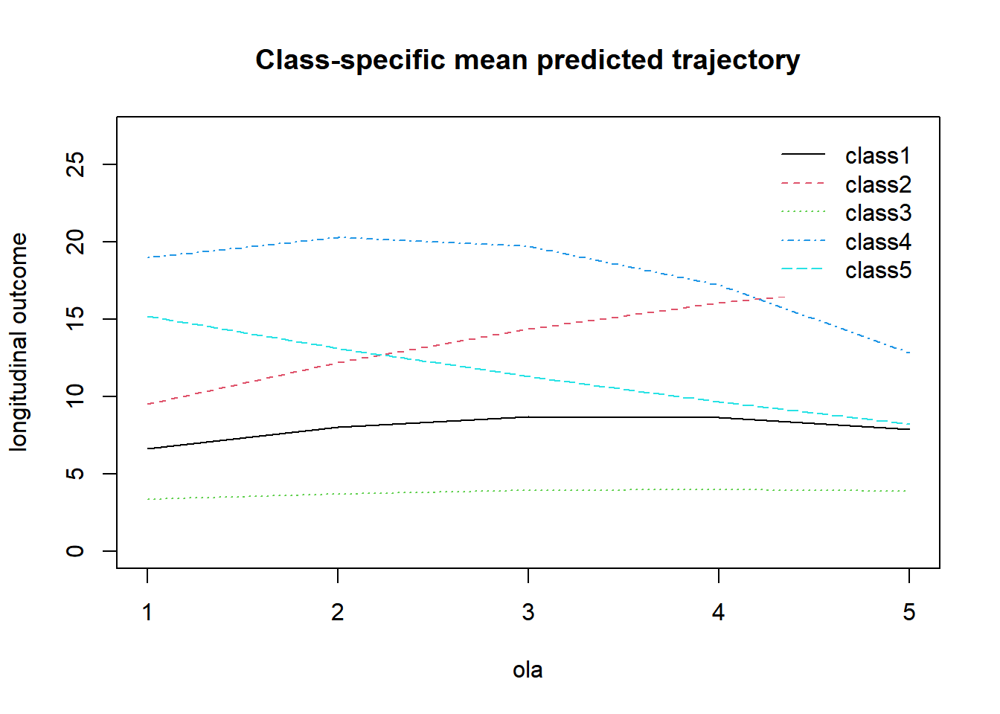
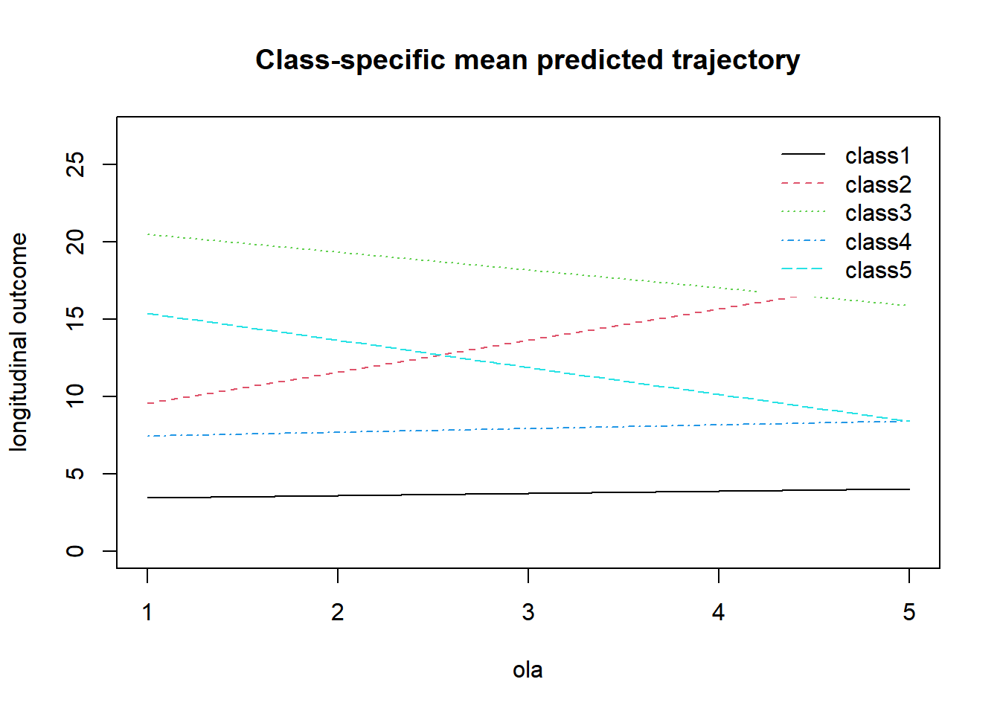
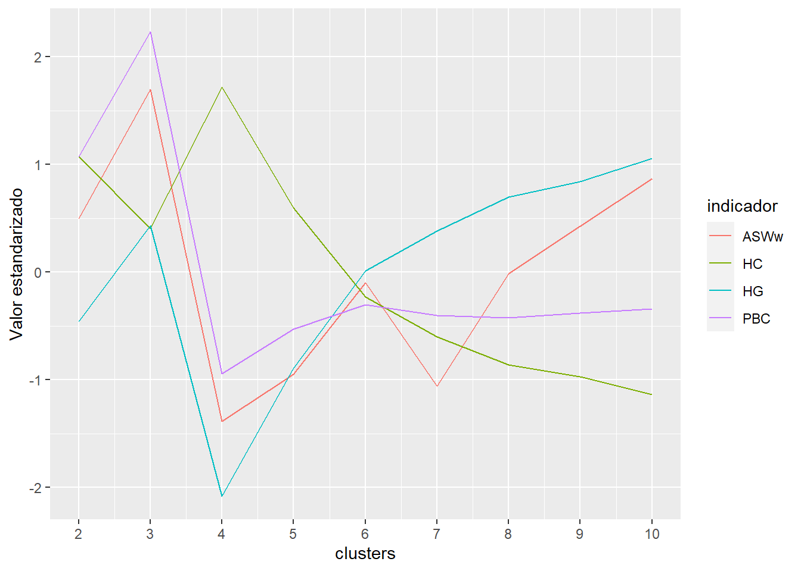
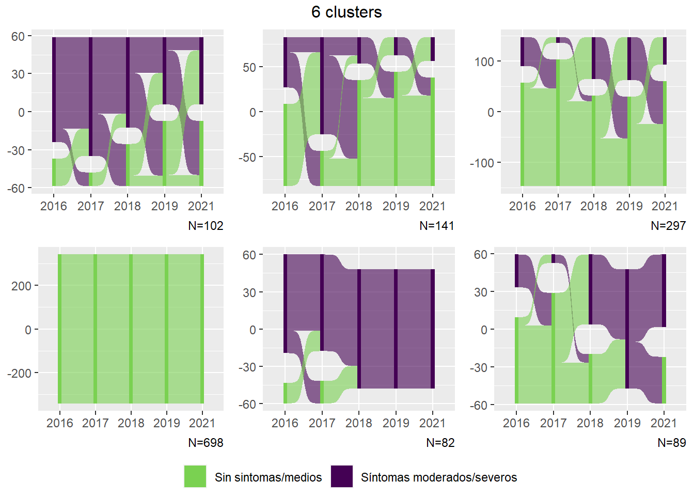

Capítulo 1 Trayectorias de sintomatología depresiva. Modelo Optimal-Matching
1.1 Secuencia de depresión con 4 categorías:
# Crear objeto con secuencias
seq.depr4 <- TraMineR::seqdef(elsoc_salud,
var = c('depr4_w01', 'depr4_w02', 'depr4_w03', 'depr4_w04', 'depr4_w05'),
states = c('Sin síntomas', 'Síntomas medios', 'Síntomas moderados', 'Síntomas severos'),
labels = c('Sin', 'Medios', 'Moderados', 'Severos'),
weights = elsoc_salud$ponderador02_w01,
cpal = c('lightgreen', 'mediumturquoise', 'skyblue3', 'slateblue4'))1.1.1 Gráfico de secuencias:
Muestra las secuencias/trayectorias que cubren el 95% de la muestra. Son 260 secuencias, ordenadas según frecuencia:
TraMineR::seqfplot(seq.depr4, border = NA, with.legend = "top",
idxs = 1:260, space = 0)
1.1.2 Frecuencia de estados y transiciones
seqstatd(seq.depr4)## [State frequencies]
## depr4_w01 depr4_w02 depr4_w03 depr4_w04 depr4_w05
## Sin síntomas 0.480 0.49 0.44 0.37 0.496
## Síntomas medios 0.303 0.30 0.32 0.38 0.297
## Síntomas moderados 0.145 0.11 0.14 0.15 0.118
## Síntomas severos 0.072 0.10 0.10 0.10 0.089
##
## [Valid states]
## depr4_w01 depr4_w02 depr4_w03 depr4_w04 depr4_w05
## N 1387 1387 1387 1387 1387
##
## [Entropy index]
## depr4_w01 depr4_w02 depr4_w03 depr4_w04 depr4_w05
## H 0.85 0.86 0.89 0.9 0.85seqtrate(seq.depr4)## [-> Sin síntomas] [-> Síntomas medios]
## [Sin síntomas ->] 0.6315011 0.2732770
## [Síntomas medios ->] 0.3831385 0.4058737
## [Síntomas moderados ->] 0.1763785 0.3718435
## [Síntomas severos ->] 0.1974423 0.2106458
## [-> Síntomas moderados] [-> Síntomas severos]
## [Sin síntomas ->] 0.05812547 0.03709645
## [Síntomas medios ->] 0.14048374 0.07050413
## [Síntomas moderados ->] 0.24994502 0.20183294
## [Síntomas severos ->] 0.25802652 0.333885391.1.3 Clusters de secuencias:
# Medir distancias entre secuencias usando analisis de secuencias usando optimal matching analysis
# Se define matriz de costos de sustitución basados en valores medios de indice phq9
substitution_cost_matrix <- as.matrix(rbind(c(0, 5, 10, 19),
c(5, 0, 5, 14),
c(10, 5, 0, 9),
c(19, 14, 9, 0)))
dist.depr4 <- TraMineR::seqdist(seq.depr4,
method = "OM",
sm = substitution_cost_matrix)# Construir tipos de trayectorias con analisis de cluster jerarquico Ward
ward.depr4 <- cluster::agnes(dist.depr4, diss = TRUE, method = 'ward')
# Comparar soluciones con diferentes numeros de trayectorias (se prueban de 2 a 10 clusters)
ward.range.depr4 <- WeightedCluster::as.clustrange(ward.depr4,
diss = dist.depr4,
ncluster = 10)
# Visualizar clusters:
ward.range.depr4$stats %>%
mutate(clusters = 2:10) %>%
pivot_longer(cols = c(ASW, ASWw, HG, PBC, HC),
names_to = 'indicador',
values_to = 'value') %>%
group_by(indicador) %>%
mutate(value = (value - mean(value, na.rm = TRUE)) / sd(value, na.rm = TRUE)) %>%
ggplot(aes(y = value, x = clusters, color = indicador, group = indicador)) +
geom_line() +
scale_x_continuous(breaks = 2:10)1.1.4 Graficos de secuencias por clusters
Pruebas con 4, 5, 6 y 7 clusters
grafico_trayectorias4_K <- function(K, ward) {
elsoc_trayectorias <- elsoc_salud
elsoc_trayectorias$trayectoria <- stats::cutree(ward, k = K)
nested_data <- elsoc_trayectorias %>%
group_by(trayectoria) %>%
nest()
N <- purrr::map(.x = nested_data$data, .f = ~dim(.x)[1])
graficos <- purrr::map2(.x = nested_data$data,
.y = N,
.f = ~ .x %>%
ggsankey::make_long(depr4_w01, depr4_w02, depr4_w03, depr4_w04, depr4_w05,
value = 'ponderador02_w01') %>%
mutate(depr = factor(node,
levels = 1:4,
labels = c('Sin sintomas', 'medios', 'moderados', 'severos')),
x = factor(x,
levels = glue::glue('depr4_w0{1:5}'),
labels = glue::glue('{c(2016:2019, 2021)}'))) %>%
ggplot(aes(x = x,
next_x = next_x,
node = node,
next_node = next_node,
fill = depr,
value = value)) +
geom_sankey(flow.alpha = .6) +
labs(x = NULL,
caption = glue::glue('N={.y}')) +
theme(legend.position = 'bottom',
legend.title = element_blank()) +
scale_fill_viridis_d(direction = -1, end = .8,
drop = FALSE))
plot <- ggpubr::ggarrange(plotlist = graficos,
common.legend = TRUE, legend = 'bottom')
annotate_figure(plot, top = text_grob(glue::glue('{K} clusters')))
}purrr::map(.x = 4:7, ward = ward.depr4, .f = grafico_trayectorias4_K)## [[1]]
##
## [[2]]
##
## [[3]]##
## [[4]]1.1.5 Opción preferida: 5 clusters
Me gusta la opción con 5 clusters. Nombres provisorios: - Sintomas severos recurrentes - Remisión sintomas - Sintomas severos nuevos - Sintomas intermitentes - Sin sintomas/sintomas medios
elsoc_salud_5 <- elsoc_salud
elsoc_salud_5$trayectoria <- stats::cutree(ward.depr4, k = 5)N <- table(elsoc_salud_5$trayectoria)
nombres_cluster <- c('Sintomas severos recurrentes', 'Remisión sintomas', 'Síntomas severos nuevos',
'Síntomas intermitentes', 'Sin sintomas/sintomas medios')
graficos <- purrr::map(.x = 1:5, .f = ~
elsoc_salud_5 %>%
filter(trayectoria == .x) %>%
ggsankey::make_long(depr4_w01, depr4_w02, depr4_w03, depr4_w04, depr4_w05,
value = 'ponderador02_w01') %>%
mutate(depr = factor(node,
levels = 1:4,
labels = c('Sin sintomas', 'medios', 'moderados', 'severos')),
x = factor(x,
levels = glue::glue('depr4_w0{1:5}'),
labels = glue::glue('{c(2016:2019, 2021)}'))) %>%
ggplot(aes(x = x,
next_x = next_x,
node = node,
next_node = next_node,
fill = depr,
value = value)) +
geom_sankey(flow.alpha = .6) +
labs(x = NULL,
caption = glue::glue('N={N[.x]}')) +
theme(legend.position = 'bottom',
legend.title = element_blank()) +
scale_fill_viridis_d(direction = -1, end = .8) +
ggtitle(NULL, subtitle = glue::glue('{nombres_cluster[.x]}'))
)
plot <- ggpubr::ggarrange(plotlist = graficos,
common.legend = TRUE, legend = 'bottom')
annotate_figure(plot, top = text_grob(glue::glue('5 clusters')))
1.2 Secuencia de depresión con 2 categorías
# Crear objeto con secuencias
seq.depr2 <- TraMineR::seqdef(elsoc_salud,
var = c('depr2_w01', 'depr2_w02', 'depr2_w03', 'depr2_w04', 'depr2_w05'),
states = c('Sin síntomas/sintomas medios', 'sintomas moderados/severos'),
labels = c('Sin/medios', 'Moderados/Severos'),
weights = elsoc_salud$ponderador02_w01,
cpal = c('lightgreen', 'slateblue4'))1.2.1 Gráfico de secuencias:
Hay 32 secuencias en total
TraMineR::seqfplot(seq.depr2, border = NA, with.legend = "top",
idxs = 1:32, space = 0)
1.2.2 Clusters de secuencias:
dist.depr2 <- TraMineR::seqdist(seq.depr2, method = "OM", sm = 'CONSTANT')
# Construir tipos de trayectorias con analisis de cluster jerarquico Ward
ward.depr2 <- cluster::agnes(dist.depr2, diss = TRUE, method = 'ward')
# Comparar soluciones con diferentes numeros de trayectorias (se prueban de 2 a 10 clusters)
ward.range.depr2 <- WeightedCluster::as.clustrange(ward.depr2,
diss = dist.depr2,
ncluster = 10)
# Visualizar clusters:
ward.range.depr2$stats %>%
mutate(clusters = 2:10) %>%
pivot_longer(cols = c(ASW, ASWw, HG, PBC, HC),
names_to = 'indicador',
values_to = 'value') %>%
group_by(indicador) %>%
mutate(value = (value - mean(value, na.rm = TRUE)) / sd(value, na.rm = TRUE)) %>%
ggplot(aes(y = value, x = clusters, color = indicador, group = indicador)) +
geom_line() +
scale_x_continuous(breaks = 2:10)
1.2.3 Gráficos de secuencia por clusters
grafico_trayectorias2_K <- function(K, ward) {
elsoc_trayectorias <- elsoc_salud
elsoc_trayectorias$trayectoria <- stats::cutree(ward, k = K)
nested_data <- elsoc_trayectorias %>%
group_by(trayectoria) %>%
nest()
N <- purrr::map(.x = nested_data$data, .f = ~dim(.x)[1])
graficos <- purrr::map2(.x = nested_data$data,
.y = N,
.f = ~ .x %>%
ggsankey::make_long(depr2_w01, depr2_w02, depr2_w03, depr2_w04, depr2_w05,
value = 'ponderador02_w01') %>%
mutate(depr = factor(node,
levels = 0:1,
labels = c('Sin sintomas/medios', 'Síntomas moderados/severos')),
x = factor(x,
levels = glue::glue('depr2_w0{1:5}'),
labels = glue::glue('{c(2016:2019, 2021)}'))) %>%
ggplot(aes(x = x,
next_x = next_x,
node = node,
next_node = next_node,
fill = depr,
value = value)) +
geom_sankey(flow.alpha = .6) +
labs(x = NULL,
caption = glue::glue('N={.y}')) +
theme(legend.position = 'bottom',
legend.title = element_blank()) +
scale_fill_viridis_d(direction = -1, end = .8,
drop = FALSE))
plot <- ggpubr::ggarrange(plotlist = graficos,
common.legend = TRUE, legend = 'bottom')
annotate_figure(plot, top = text_grob(glue::glue('{K} clusters')))
}purrr::map(.x = 2:7, ward = ward.depr2, .f = grafico_trayectorias2_K)## [[1]]
##
## [[2]]
##
## [[3]]##
## [[4]]
##
## [[5]]
##
## [[6]]
1.4 Modelo multinomial logit
m1 <- elsoc_salud_5 %>%
filter(!elsoc::is_nsnr(m30_w01, m30_w02, m30_w03, m30_w04, m30b_w05)) %>%
mutate(
m30_w01 = 1000*as.numeric(car::recode(m30_w01, "1 = 220; 2 = 250; 3 = 305; 4 = 355; 5 = 400; 6 = 445; 7 = 490;
8 = 535; 9 = 585; 10 = 640; 11 = 700; 12 = 765; 13 = 845; 14 = 935;
15 = 1040; 16 = 1180; 17 = 1375; 18 = 1670; 19 = 2275; 20 = 2700; NA = NA")),
m29_w01_imp = ifelse(is_nsnr(m29_w01), m30_w01, m29_w01),
ypc_w01 = m29_w01_imp / nhogar1_w01) %>%
mutate(quintil_w01 = statar::xtile(ypc_w01, n = 5, wt = ponderador02_w01),
# quintil_w01 = factor(quintil_w01,
# levels = 1:5,
# labels = glue::glue('Quintil {1:5}')),
trayectoria = factor(trayectoria,
levels = 1:5,
labels = c('Sintomas severos recurrentes',
'Remisión sintomas',
'Sintomas severos nuevos',
'Sintomas intermitentes',
'Sin sintomas/sintomas medios')),
trayectoria = fct_rev(trayectoria),
sexo = factor(m0_sexo_w01, levels = 1:2,
labels = c('Hombre', 'Mujer'))) %>%
multinom(trayectoria ~ sexo + m0_edad_w01 + quintil_w01,
data = .) ## # weights: 25 (16 variable)
## initial value 1977.999194
## iter 10 value 1675.752393
## iter 20 value 1471.810141
## final value 1470.686805
## convergedmodelsummary(m1,
stars = c('*' = .05, '**' = .01, '***' = .001),
group = model + term ~ y.level)| Sintomas intermitentes | Sintomas severos nuevos | Remisión sintomas | Sintomas severos recurrentes | ||
|---|---|---|---|---|---|
| Model 1 | (Intercept) | -0.693* | -1.436*** | -2.707*** | -2.580*** |
| (0.349) | (0.393) | (0.536) | (0.565) | ||
| sexoMujer | 0.470** | 0.685*** | 0.900** | 1.277*** | |
| (0.177) | (0.202) | (0.280) | (0.326) | ||
| m0_edad_w01 | -0.012* | -0.003 | 0.010 | 0.002 | |
| (0.006) | (0.006) | (0.008) | (0.008) | ||
| quintil_w01 | -0.124* | -0.139* | -0.184* | -0.245** | |
| (0.061) | (0.067) | (0.089) | (0.093) | ||
| * p < 0.05, ** p < 0.01, *** p < 0.001 |